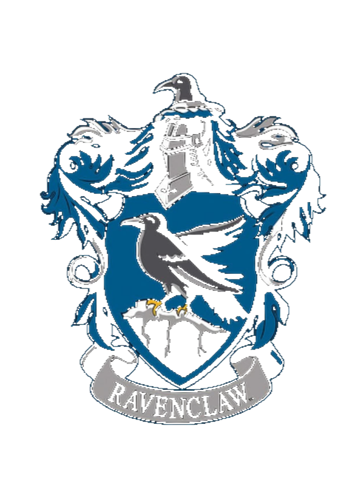

學院介紹
「我們的內部必須緊密團結，不然一切就會從內部瓦解。」——分類帽
霍格華茲的學生被分入四個學院：葛萊分多、赫夫帕夫、雷文克勞和史萊哲林。
葛萊分多
代表著勇氣、膽量及騎士氣慨。其代表顏色是對應於火元素的紅色和金色，其守護神是金獅。該學院導師是副校長兼變形學教授麥米奈娃教授，直到她升為校長。學院的幽靈是尼古拉斯·德米西·波普頓爵士，人稱「差點沒頭的尼克」。

赫夫帕夫
代表著努力、耐心、正義、忠誠。代表顏色是鮮黃色和黑色，對應於土元素。赫夫帕夫的守護神是黑獾。學院導師是藥草學教授帕莫娜·芽菜教授(Pomona Sprout)。學院幽靈是胖修士。赫夫帕夫的宿舍及公共房間的入口隱藏於廚房走廊裡的一堆大桶後的凹處。

雷文克勞
代表著智慧，創造力，學習、領悟性。代表顏色是藍色和古銅色（電影中是藍色和灰色），對應於風元素，雷文克勞的守護神是褐鷹。學院導師是符咒學教授菲力·孚立維教授。學院的幽靈是羅威娜·雷文克勞的女兒海倫娜·雷文克勞（灰衣貴婦）。雷文克勞的宿舍設於霍格華茲西翼的雷文克勞塔。

史萊哲林
代表著野心勃勃，精明，領導才能、老謀深算。代表顏色是綠色和銀色，對應於水元素，史萊哲林的守護神是銀蛇。學院導師是魔藥學教授賽佛勒斯·石內卜（Severus Snape）教授。-1993學年的口令曾是「純種」。許多人認為這個學院的學生都與黑魔法有關。